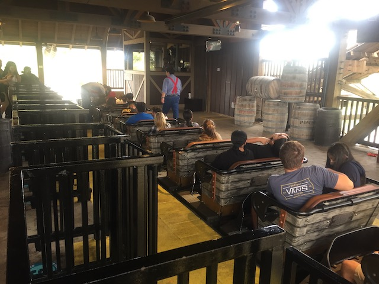
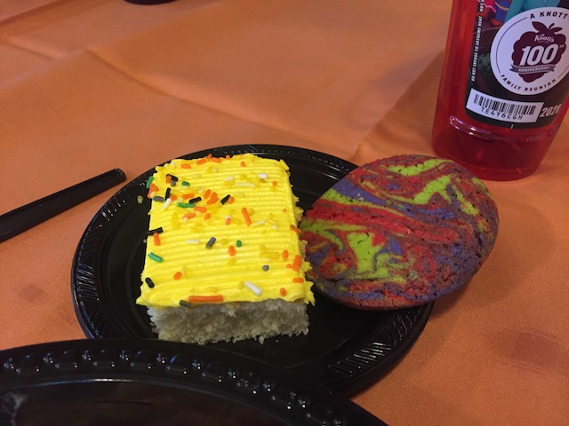
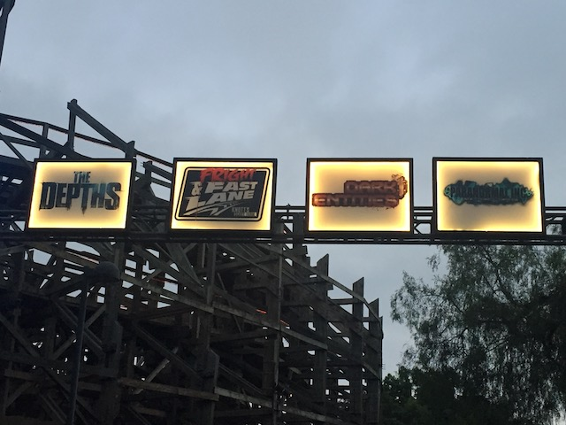

| |
Fall 2021 Photos
Fright Fest Halloween Horror Nights Knotts Scary Farm Belmont Park & Castle Dark
All right. We had our fun trying something new with Halloween Horror Nights. But now, it's time to go back to the classics with Knotts Scary Farm. Oh, and we're here for a bonus day. Hey, friends are here, I live really close, and I have to be here anyway to pick up Jason from work. So why not head over and have some fun. Oof.
"Hey Kevin. You doing anything fun after work?" "Nah, nothing special. Just taking a spin on one of my home B&Ms."
While its still not the best B&M by any means, I do have to say that it has improved over the years.
Hey. You think any changes are gonna be coming to this area of the park anytime soon?
Hold on. Calico Candy Mine Ride? WTF is this? Oh boy. Time to do some explaining.
Oh, I have a feeling that this dentist is gonna have A LOT of new clients after everyone returns 🎵From the Calico Candy Mountain🎵.
So the Calico Candy Mine Ride is the halloween makeover for the Calico Mine Ride. Except....it's not scary at all.
No. Calico Candy Mine Ride focuses less on the more common "MONSTERS" aspect of Halloween. Instead, it focuses on the part of Halloween you focus more on as a kid, but less so as an adult. "CANDY!!!"
And of course, it has one of the most obnoxious theme park earworms since "It's a Small World". 🎵On the Calico Candy Mountain🎵. OMG!!! I'm torn on whether Knotts should just upload this song directly to Youtube. I'd probably blast that on repeat and drive myself crazy if they did that. So....thanks for not putting it out there I guess lol.
For as stupid and obnoxious as this is, I do hope that they do this again in 2022. It's just too...wacky and catchy to not do,
"Help us! Working conditions 🎵On the Calico Candy Mountain🎵 are horrendous! We risk our lives harvesting this rock candy! But those motherf*ckers are so greedy that they aren't even paying us in cash! They think it's OK to pay us in chocolate coins!"
And to make it even wackier, the ride ended with a tunnel of cotton candy. I know it's just cotton, but the stupid child in me wanted to reach out and grab some. Not surprisingly, the cotton candy theming was behind a net the second time around. Probably some stupid children actually tried grabbing some and eating it. Mmm. Dirty cotton. Yummy.
Time for the actual Scary Farm day, and.....YIKES!!! This is NOT a pleasant day to be at Knotts Berry Farm.
Damn. Ghostrider's line is INSANELY long. Well at least we're not....WHY ARE WE GETTING IN LINE!!?
Yeah. Normally, we would NEVER wait in a line like that for Ghostrider. But....when you're with someone who needs the credit, you just suck it up and wait it out. At least you can chat in the horrible line.

Well, at least Ghostrider was running really well today.
This totally seems like something that Cody would do.
Well, at least these people shouldn't have any trouble identifying their car with all the crap they stuck on it.
The sun is going down. That means its time for Knotts Berry Farm to become Knotts Scary Farm. >=)
 Well, once again, Jason wanted to go all out. So we decided to indulge and do the Boo-fet before Knotts Scary Farm.
Well, once again, Jason wanted to go all out. So we decided to indulge and do the Boo-fet before Knotts Scary Farm.

Ah! Calories! The scariest thing at the Boo-fet!
Jason! Look out! Your (now former) boss is right behind you!
Let's start out the mazes with some spooky alien fun over at Dark Entities.

While neither are the best maze, both Paranormal Inc. and The Depths are really fun mazes.
Still a super cool maze that acts as a big love letter to Ghost Town.
 Hangtime has been down for the past several months due to a broken lifthill! Ooh! Now THAT is something scary!
Hangtime has been down for the past several months due to a broken lifthill! Ooh! Now THAT is something scary!
New for 2021 (and replacing Shadowlands) is Mesmer.
So this is basically a clown themed maze. While it sounds stupid for anyone not afraid of clowns (which I am not). But it's really cool. All the trippy effects just make this a super fun maze. Really hope this maze sticks around.
Nope. Tonight is not for rides. I'll ride you another day Supreme Scream (I live a stone throws away from you anyways).
"Hey! Wait a minute! This isn't a dark ride! Where is the track! Where's the car for me to ride in!?"
I know I generally don't do rides during Knotts Scary Farm. But Timber Mtn Log Ride is the one exception due to its special theming specifically for Knotts Scary Farm.
The ride is already really great. But the Halloween theming just makes it even better.
Do you want the monsters to get you? If not, then you better SIT DOWN!!!
So the Calico Candy Mine Ride had a dark version that they had for Knotts Scary Farm. This basically just stopped in the middle, turned off the lights, played some spooky sounds and screams, before resuming as normal. It's kind of amusing at just how lazy and how little they tried for the adult version. Quick little tip. You're not gonna get an adult version of the 🎵Calico Candy Mountain🎵. Or you could just have a rock candy cave-in and have the rest of the ride be the happy jolly miners fighting, starving, and debating whether to resort to cannibalism. Never mind. I can make an adult version of this ride. >=)
So in 2019, I expressed concern about them retiring "The Hanging" as it was Knotts Scary Farms star show. Well....yep. It's gone. I am already unhappy about this. But hearing the reason only makes it a lot worse. They're concerned that the show is too controversial, and are premeditatively retiring it before it lands them in hot water. GOD DAMN IT!!! SICK OF PEOPLE BEING SO SENSITIVE!!! And most infuriatingly of all, the people who bitch and moan about others being too sensitive are the ONES MOST SENSITIVE!!! They're afraid of having to hang a certain orange manchild fascist, so they're just throwing in the towel premptively. GOD DAMN IT!!!! SICK OF THESE HYPOCRITICAL ASSHOLES (Shut the f*ck up about being sensitive. You motherf*ckers will not only cry, but riot and attempt a f*cking coup because you didn't get your way).
Well, at least Puppet Up is still here. Pretty sure they quickly regretted asking me to help with improv due to my morbid sense of humor. >=)
"Jason. We need to save money. Do not buy those pup...Too late."
Peter Peter. Pumpkin Eater. He's coming out to get you.
Not sure what this random witch show is, but Jason insisted on seeing it, and we're ahead of schedule. So...why not.
Meh. It was OK. I guess. But nothing special.
 Final maze of Knotts Scary Farm. And...this is a good one to go out on. Big fan of Wax Works.
Final maze of Knotts Scary Farm. And...this is a good one to go out on. Big fan of Wax Works.
I really wish I was back here just for a backstage tour so I could get some great footage (I gotta upload another raw footage video, or possibly make another park video. Do more with my footage. Update my dormant Youtube channel).
Hey. We've done all the mazes, did Halloween Timber Mtn Log Ride, saw Puppet Up, the line is a walk-on, and Brandon still needs this credit. So....enjoy Sierra Sidewinder dude!
Well, I have to thank Knotts Scary Farm for having yet another really great event this year. I had a blast doing this with friends and look foreward to coming back.
Belmont Park & Castle Dark
Home
|